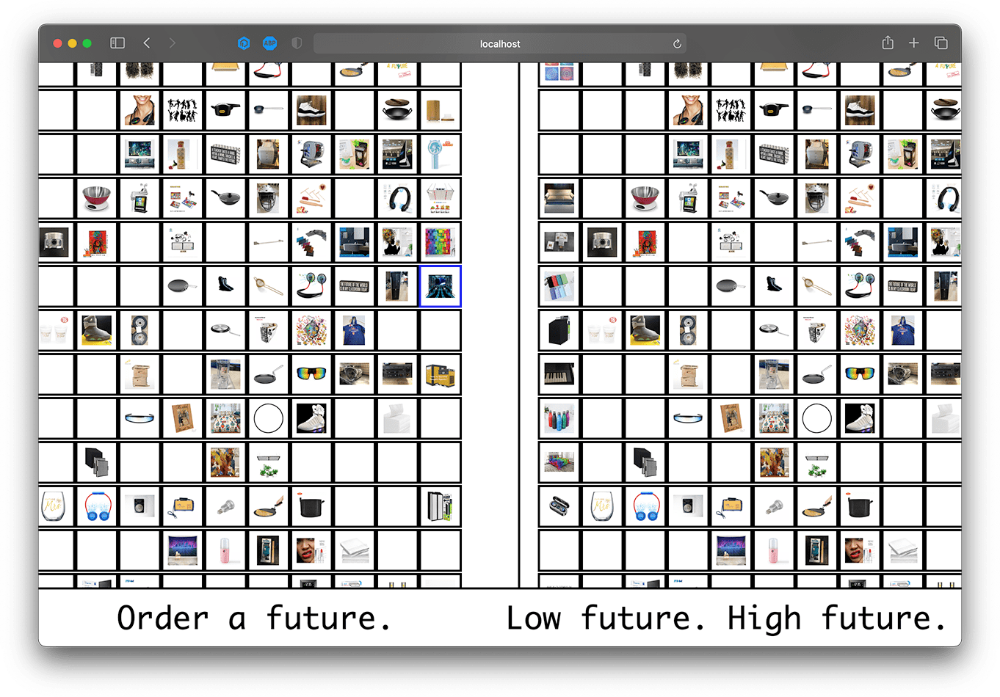
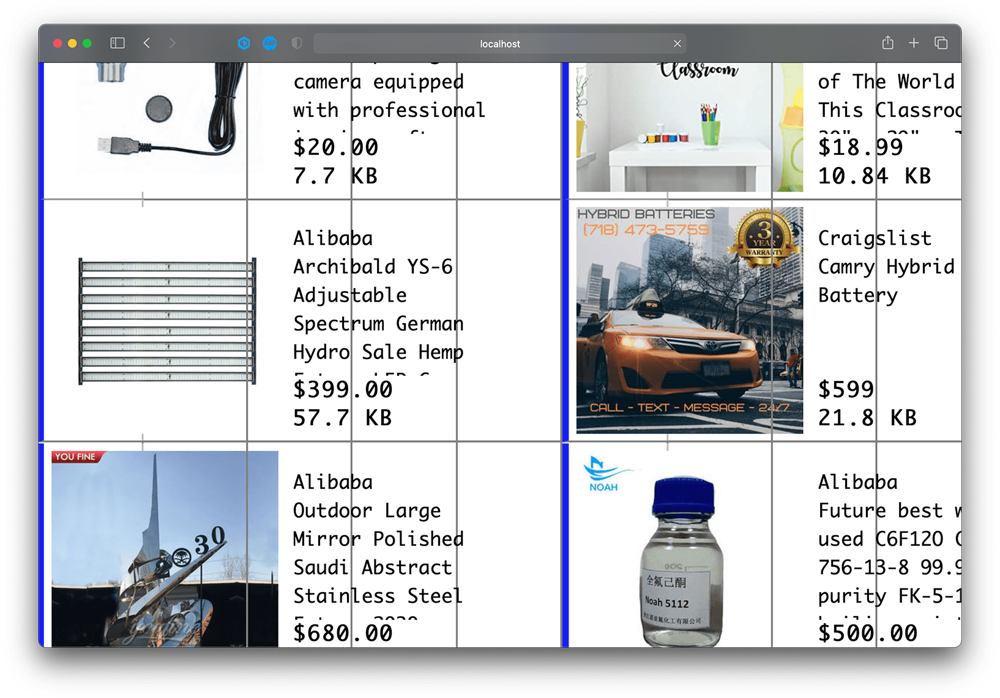
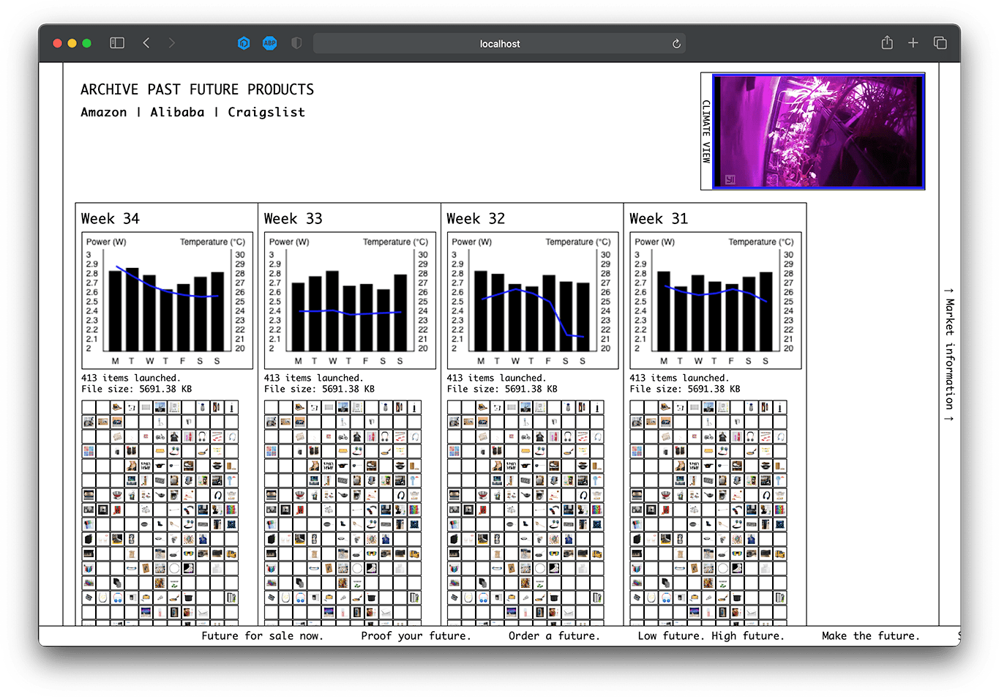
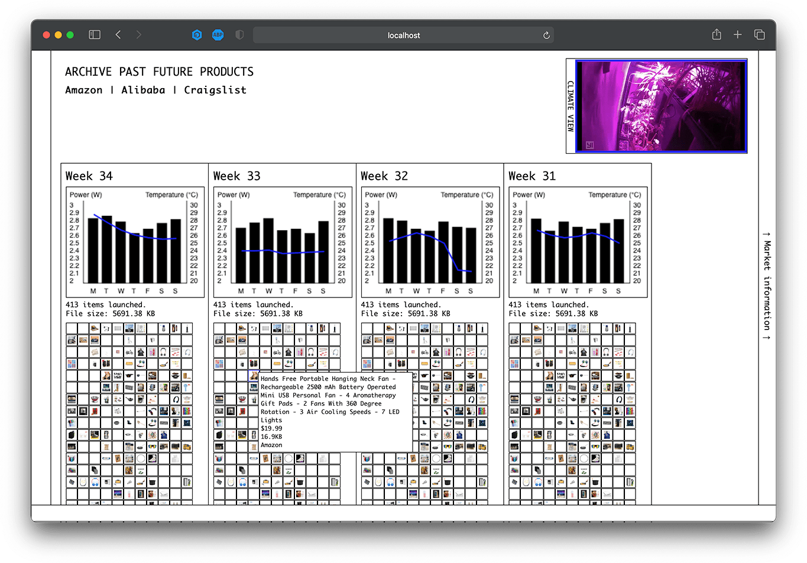
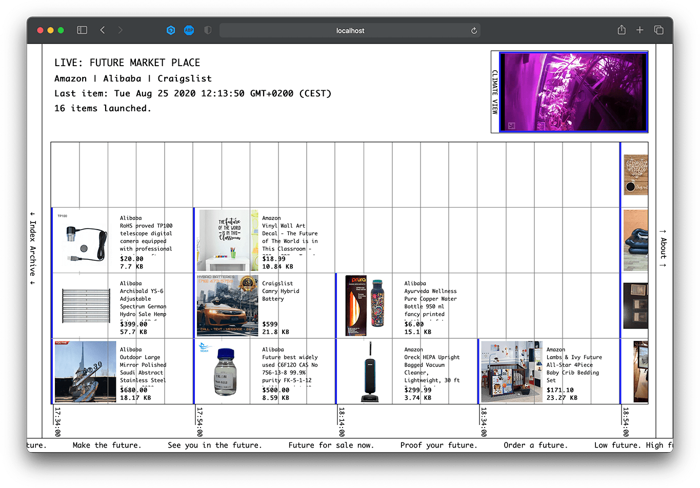
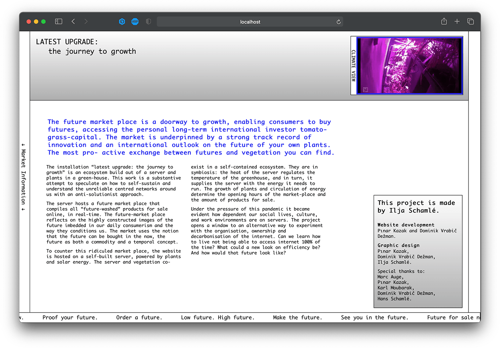
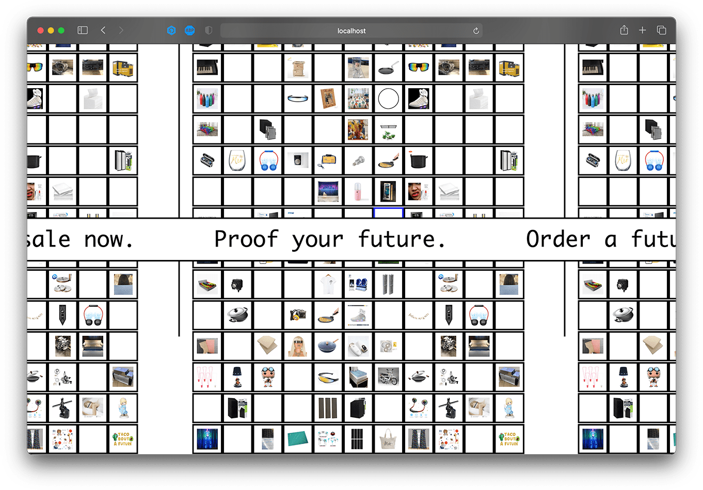

Future Market is a multi-media artwork by Ilja Schamle about future-washing in the contemporary comsumerist culture. The ongoing project is a group collaboration, centered around a plant powered Raspberry Pi, which runs a web scraper. The scraper made in collaboration with Dominik Vrabič Dežman, scrapes "future-washed" products from online shopping websites via Node.JS, which is displayed on the designed website, in order to visualise the concept. The website itself is hosted on a server in the Raspberry Pi as well, which was translated into a visual style inspired by early internet aesthetics, as well as stock market visuals.
The work was displayed as part of Dutch Design Week 2020, online.






